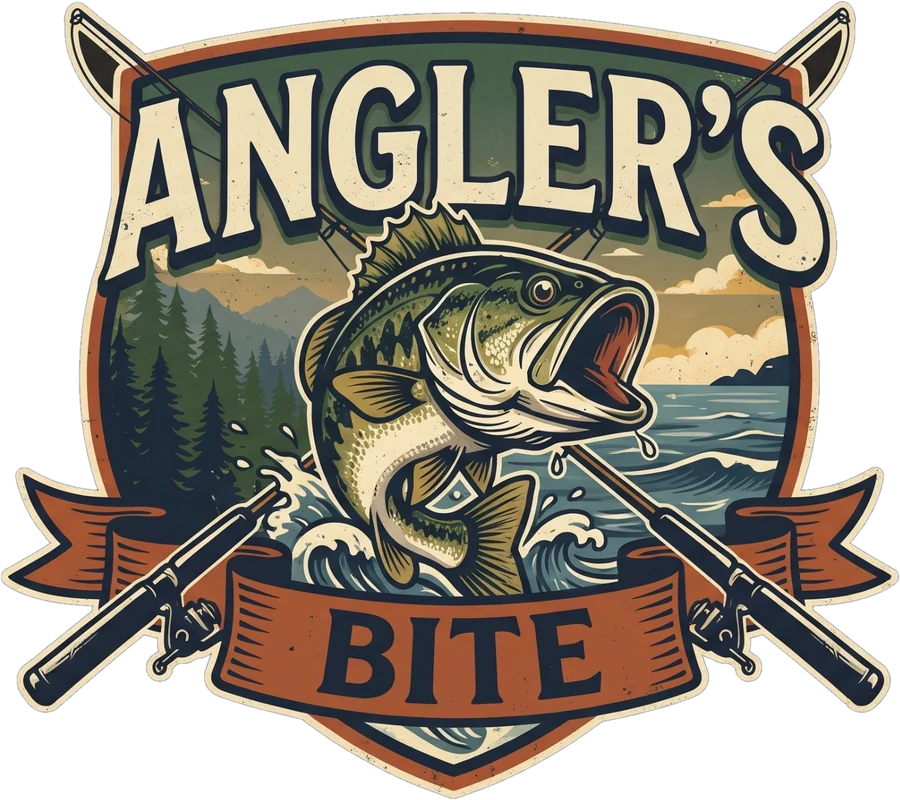

Bring in the five heaviest fish of the day’s target species before the 3:00 PM weigh-in.
Back to the water.
| # | Angler | Fish | Bag weight | Big bass |
|---|
Ultra needs a strong graphics card. If the game runs slowly it steps down by itself, until you pick a level here.
Underwater follows your lure full screen, with a small boat view in the corner. Switch any time while reeling with the lure cam button.
Squarebill Crank based on "Fishing lure Chubby 38 #3" by Zverev Kirill, licensed under CC BY 4.0. Simplified, recoloured and brand name removed.
Largemouth, golden and spotted bass based on "Model 67A - Largemouth Bass", and bluegill based on "Model 70B - Bluegill Mesh", by DigitalLife3D, licensed under CC BY-NC 4.0. Re-posed, resized and recoloured.
High-quality fish skins (Ultra and High settings) are made from photos on iNaturalist: smallmouth bass and black crappie by Quinn and Quinn, barramundi by James H and Raja bandi, spotted bass by Nick Tobler, northern pike by Евгений Маринкин, channel catfish by aarongunnar, butterfly peacock bass by James-LaFontaine, red-bellied piranha by Diogo Luiz, redtail catfish by Chia/Ma'ayan, wolf fish by K. Zyskowski & Y. Bereshpolova, brook trout by Pablo (mirrored), arapaima by Lythronax246, rainbow trout by Lee Cain, all CC BY 4.0, giant snakehead by Dr. Nasser Halaweh, muskellunge by Nancy Tulloch, striped snakehead by R.B. Reyes (CC BY 4.0), hampala barb by Wibowo Djatmiko (CC BY-SA 3.0) and bluegill by Scott Harden (CC BY-SA 4.0), via Wikimedia Commons; the hampala and bluegill skin textures are shared under the same CC BY-SA licences; yellow perch by Quinn (CC BY 4.0); walleye (photo), lake trout (photo) and burbot (photo) are CC0 public-domain photos. Silver arowana by Gannu03 (CC BY-SA 4.0, colour-corrected; the derived arowana skin is CC BY-SA too). Speckled peacock bass by SimonovichF (Wikimedia Commons, CC BY-SA 4.0; the derived skin is CC BY-SA too). Payara: photo (CC0). Cut out, straightened, retouched and wrapped onto 3D models; shapes also traced from these photos.
Everything else is original to Angler's Bite.
Each fish is graded against its own species: Poor, Small, Decent, Huge and Monster, worth one to five stars. A 3 lb largemouth is Decent; a 3 lb bluegill would be a world record.